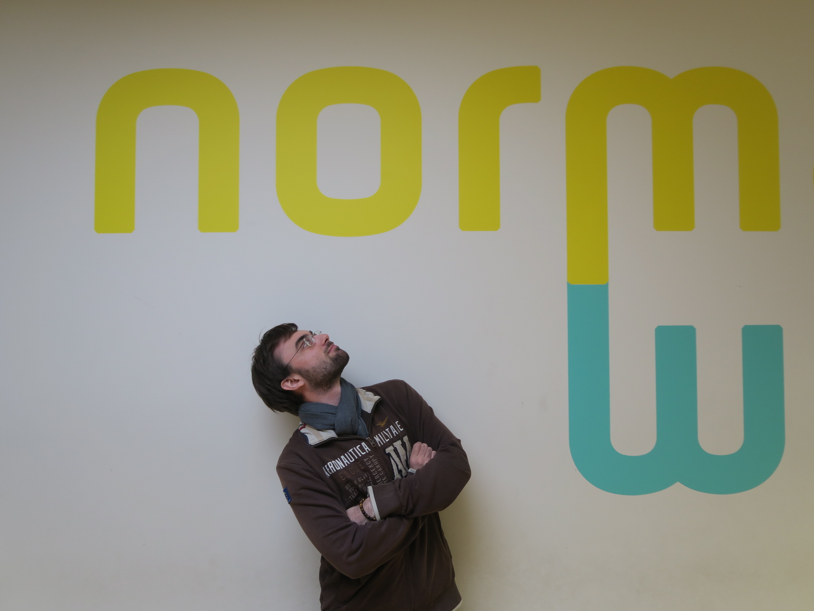
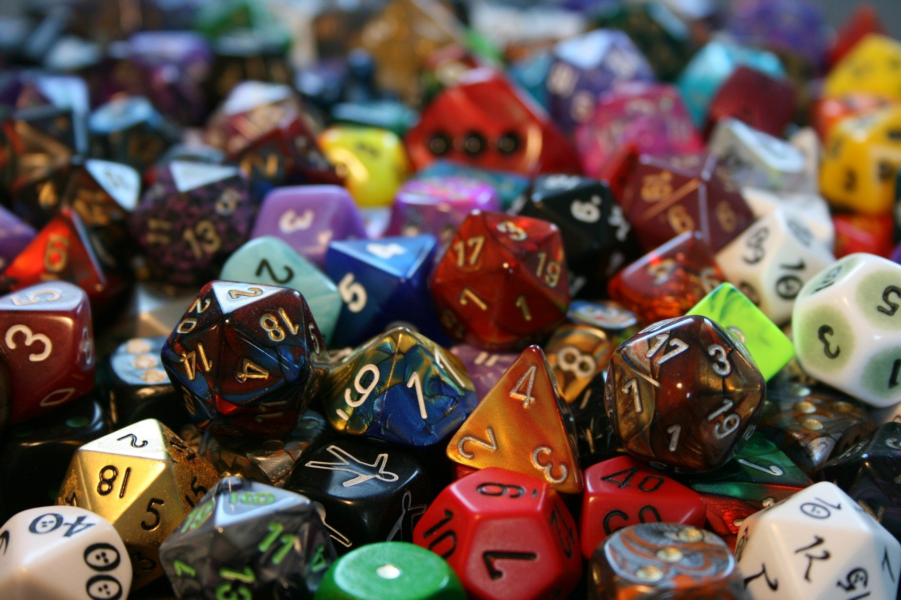
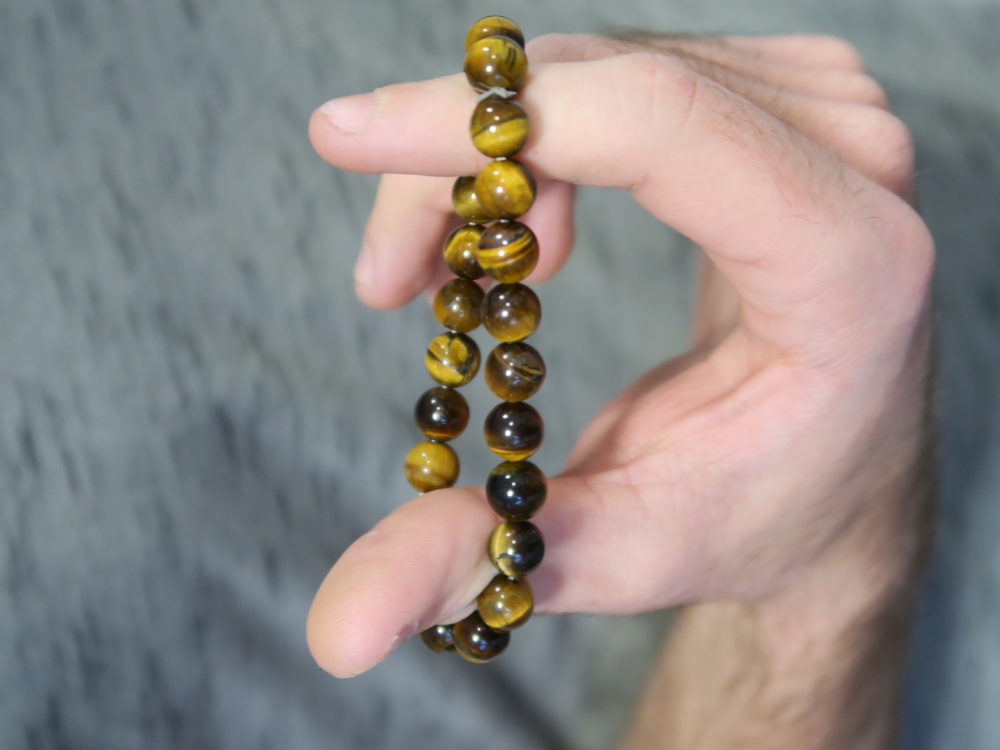

Thomas Carlus


"Avec Carlus, prenez un bonus!"
Histoire personelle :
Je m'appelle Thomas Carlus, je suis né à Mont-Saint-Aignan en 1997 et j'ai grandi à Rouen.
Mes parents m'ont appris à respecter autrui et l'importance de l’ouverture d'esprit.
J’ai une sœur et un frère ce qui m’a permis d'apprendre, en tant qu’aîné, comment résoudre beaucoup de situations complexes avec diplomatie.
Dès mes premières années je me suis intéressé à l’ordinateur, ce qui m'a permis d'acquérir une aisance avec le numérique et le web.
Mes principales passions sont :

- L’univers vidéoludique dans toute son envergure. Subjugué, fasciné, aucun adjectif n’est à la hauteur de la dévotion que je consacre depuis tout petit à ce média en développement constant. Je ne me refuse aucun genre et suis toujours à la recherche de nouvelles expériences, de nouvelles couleurs à trouver dans ce spectre en expansion. C’est avant tout le “gameplay”, cette nuance ambiguë entre ressenti et mécaniques de jeu, qui m’intéresse. Lettre virtuelle nouant étrangement presque physiquement créateurs et joueurs, elle est la substantifique moëlle apportant à chacun son expérience individuelle du jeu. Aujourd’hui très friand des “jeux de combat” compétitif, j’estime que le genre m’apporte au quotidien : persévérance, discipline, humilité, et un respect mutuel que je ne retrouve que dans les domaines sportifs.
- La lecture, depuis l'enfance avec les nombreux récits mythologiques, en passant par les polars, thrillers, fantastique, merveilleux, science-fiction… Ainsi que les nombreux genres de manga. Ces nombreuses lectures ont forgé mon imaginaire, aiguisé ma curiosité et raffiné mon écriture.
- Le jeu de rôle, dont les limites sont posées par la créativité du joueur. En plus d’être extrêmement enthousiasmant, les innombrables personnalités endossées par les joueurs tour à tour permettent de se défouler et d’explorer les facettes de chacun.
Je pense que ces trois activités m'ont façonné. Étant qualifié de sérieux, attentif et classé dans la boîte "Bon élève" depuis tout petit, n'ayant jamais fait de crise d'adolescence, elles ont été le substitut qui m'a permis d'essayer, de me tromper et de grandir un peu plus à chaque fois, processus que j'entame aujourd'hui encore avec un engouement qui jamais ne s'est tari.
Mon CV :
Lien vers mon CV
Je recherche un stage en développement web pour Mai 2020.
J'ai une affinité pour le travail en équipe ainsi que les langages de programmation/balisage et
je souhaite développer mon expérience professionnelle un maximum.